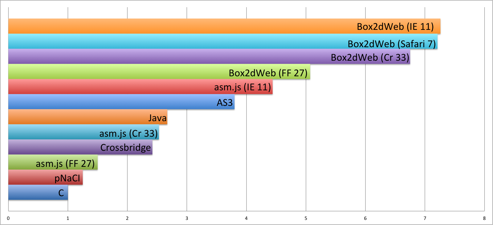

Bring Native to the Web
An introduction to Emscripten and asm.js
张 频
pzhang@mozilla.com
Outline
- What is Emscripten and asm.js?
- Performance comparison and demos
- Emscriptem tutorial
- Connecting C/C++ and Javascript
- Limitations
About Mozilla
Non-profit orgnization
Our mission is to promote openness, innovation & opportunity on the Web
1000+ employees in 15 countries
500+ million users
What is Emscriptem and asm.js?
About Emscripten
An open source LLVM to Javascript compiler
Complie C/C++ code into Javascript
C/C++ ----> llvm ------> javascript
Execute at close to native speed
Use standard web technologies
Integrated into Unity3D, Unreal Engine etc.
Created by Mozilla
Why Emscripten?
Lots of powerful and stable tools in the native world
Rewritting in JS is time consuming or even impossible
Running on the web!
Your apps can reach all the platforms
Execute at close to native speed
Javascript engines are highly optimized and getting faster
asm.js
A low-level subset of Javascript, easy to be optimized (AOT)
Enabled by prologue directive like strict mode
// Sample codes in asm.js
function asmCode(global, env, buffer) {
'use asm';
var HEAP = new global.Uint8Array(buffer);
function fib_like(x) {
x = x|0;
if ((x >>> 0) < 2) return HEAP[x]|0;
return ((fib_like((x-2)|0)|0) + (fib_like((x-1)|0)|0))|0;
}
return fib_like;
} HEAP is a virtual heap as typed arrays
|0 trick ensures 32-bit ints
asm.js cont.
Sample C code
// sample c code
int increase(int a) {
return a + 1;
} Compiled Javascript code
// generated asm.js code
function _increase(a){
a=a|0;
return a+1|0
} Performance comparison and demos
Demos
Running Python and Lua in web page.
Angry Bots
Here are more examples and demos
asm.js Performance - Box2D
 source: @jgw, Box2D 2014 Update; axis is time slower than native, lower is better{kind=link}
asm.js is faster than "typical" JavaScript (Box2dWeb) on Internet Explorer, Chrome and Firefox
asm.js Performance - Unity3D
Run on 15” Retina MacBook Pro 2.6 GHz i7 running OS X 10.10 Source: http://blogs.unity3d.com/cn/2014/10/07/benchmarking-unity-performance-in-webgl/{kind=link}
Emscripten tutorial
Emscripten toolchain

Emscripten tutorial - download and install
Download emsdk, install and activate the latest branch
http://kripken.github.io/emscripten-site/docs/getting_started/downloads.html
$ cd $EMSDK_HOME/$ ./emsdk update$ ./emsdk install latest$ ./emsdk activate latest$ source ./emsdk_env.shEmscripten tutorial cont.
Compile test codes in the SDK
// $EMSDK/emscripten/lastest/tests/hello_world.c
#include<stdio.h>
int main() {
printf("hello, world!\n");
return 0;
} $ cd $EMSDK/emscripten/latest
$ ./emcc tests/hello_world.c Run generated code in node.js
$ node a.out.jsGenerate and run code in browser
$ ./emcc tests/hello_world.c -o hello_world.htmlInside the generated code
Most of the codes are framework and libraries
9k+ codes are generated (unoptimized)
Code size: 350k, zipped size: 84K
$ ./emcc -O2 --closure 1 tests/hello_world.cCode size: 85K, zipped size: 83k
// Generated Javascript codes with `-O1`
function _main() {
var label = 0, sp = 0;
sp = STACKTOP;
(_puts((8|0))|0);
STACKTOP = sp;return 0;
} Emscripten Runtime Environment
Implemented libc and libcxx and a virtual file system
Default file system MEMFS stores files in-memory
IDBFS could be mounted to persist the data
NODEFS could be mounted access the real files
Implemented Simple DirectMedia Layer API (SDL)
provides low level access to audio, keyboard, mouse, joystick, and graphics hardware
Connecting C++ and Javascript
Connecting C++ and Javascript
Call compiled C from Javascript
C++ binding
name mangling
Call Javascript from C/C++ There are thoundsands of browser native APIs, geolocation, webrtc etc.
Part I: Call compiled C functions from JS
Call compiled C function from JS
C code
// int_sqrt.c
#include <math.h>
int int_sqrt(int x) {
return sqrt(x);
} Compile to Javascript
$ emcc int_sqrt.c -s EXPORTED_FUNCTIONS="['_int_sqrt']" Call `int_sqrt` from Javascript
cwrap
// Javascript
var int_sqrt = Module.cwrap('int_sqrt', 'number', ['number'])
var result = int_sqrt(12); ccall
// Javascript
var result = Module.ccall(
'int_sqrt', // name of C function
'number', // return type
['number'], // argument types
[28]); // arguments Part II: C++ binding, WebIDL Binder
C++ binding - WebIDL Binder
A lightweight approach to binding C++
Use WebIDL to define bindings
Support subset of C++ types that can be expressed in WebIDL
This subset is more than sufficient for most use cases
WebIDL Binder
| foobar.h | foobar.webidl |
|
|
There is no `int` in WebIDL, use `long` instead, here is detailed type mapping
WebIDL Binder
Generate glue codes
$ cd $EMSDK/emscripten/lastest
$ python tools/webidl_binder.py foobar.webidl #include the headers you are binding and glue.cpp
// glue_wrapper.cpp
#include "foobar.h"
#include "glue.cpp" Compile them together
$ emcc foobar.cpp glue_wrapper.cpp --post-js glue.js -o foobar.js Using C++ classes in Javascript
var foo = new Module.Foo();
foo.setValue(100);
console.log(foo.getValue());
var bar = new Module.Bar();
bar.doSomething(); Destroy the object if needed, i.e. C++ class have destructor
Module.destroy(foo);
Module.destroy(bar); WebIDL Binder
Sub-classing C++ base classes in JS
Use JSImplementation in WebIDL
// `Base` is the C++ class
[JSImplementation="Base"]
interface ImplJS {
void ImplJS();
void virtualFunc();
}; Implement the interface in JS
var o = new ImplJS();
o.virtualFunc = function() { ... }; Part III: Embind
Call compiled C++ from JS - Embind
Bind C++ functions and classes to Javascript
Was inspired by Boost.Python
Need to add some binding declaration codes
No extra tool, say WebIDL, is needed
Embind - binding functions
// sample.cpp
size_t cpp_strlen(std::string str) {
return str.length();
} // say my_binding.cpp
#include <emscripten/bind.h>
#include "sample.h"
using namespace emscripten;
EMSCRIPTEN_BINDINGS(cpp_funcs) {
function("cpp_strlen", &cpp_strlen);
} Compile and call from Javascript
Compile with --bind
$ emcc sample.cpp my_binding.cpp --bind -EXPORTED_FUNCTIONS=["cpp_strlen"]Call compiled code from Javascript
// Call compiled binding function from javascript
console.log("The length is: " + cpp_strlen("some string here")); Embind - binding classes
// sample.h
class ClassA {
int value;
public:
ClassA(int aValue);
void setValue(int aValue);
int getValue() const;
static void printSomething();
}; // my_bindings.cpp
#include <emscripten/bind.h>
#include "sample.h"
EMSCRIPTEN_BINDINGS(cpp_class) {
class_<ClassA>("ClassA")
.constructor<int>()
.property("value", &ClassA::getValue, &ClassA::setValue)
.class_function("printSomething", &ClassA::printSomething)
;
} Embind - binding classes cont.
Compile and call from Javascript
$ emcc sample.cpp my_binding.cpp --bind -EXPORTED_FUNCTIONS=["cpp_strlen"]// Call from Javascript
var obj = new Module.ClassA(100);
console.log("ClassA::getValue: " + obj.getValue());
Module.ClassA.printSomething()
// The C++ object must be deleted.
sampleObj.delete(); Javascript does not support finalizers or weak references with callbacks
JavaScript code must explicitly delete any C++ object handles it has received, or the Emscripten heap will grow indefinitely.
Embind - derive from C++ classes
// sample.h
class MyInterface {
private:
std::string name = "My Interface Name";
public:
const std::string getName();
virtual void invoke(const std::string& str) = 0;
}; // my_bindings.cpp
class MyInterfaceWrapper : public wrapper<MyInterface> {
public:
EMSCRIPTEN_WRAPPER(MyInterfaceWrapper);
void invoke(const std::string& str) {
return call<void>("invoke", str);
}
};
EMSCRIPTEN_BINDINGS(cpp_interface) {
class_<MyInterface>("MyInterface")
.function("invoke", &MyInterface::invoke, pure_virtual())
.function("getName", &MyInterface::getName)
.allow_subclass<MyInterfaceWrapper>("MyInterfaceWrapper")
;
} Embind - derive from C++ classes, cont.
extend or implement the interface in JS
// Use `extend` to subclass in Javascript
var DerivedClass = Module.Interface.extend("Interface", {
invoke: function(str) {
// Your code goes here
console.log('invoking with: ' + str);
}
});
var instance = new DerivedClass; // Use an object to `implement` the interface
var x = {
invoke: function(str) {
console.log('invoking with: ' + str);
}
};
var interfaceObject = Module.Interface.implement(x); Call Javascript from C/C++
Call Javascript from C/C++
Direct call, but slightly slow
// sample.c
#include <emscripten.h>
int main() {
emscripten_run_script("alert('hi')");
} Inline Javascript by using macro EM_ASM()
// sample.c
#include <emscripten.h>
int main() {
EM_ASM(
alert('Hello world!');
);
} Call Javascript from C/C++, cont.
Implement a C API in JavaScript
// sample.c
#include <emscripten.h>
// Declare function defined in Javascript
extern int js_strlen(const char* str);
int main() {
const char* str = "string for testing";
int len = js_strlen(str);
printf("The length of '%s' is %d.\n", str, len);
} Make the JS implementation as part of the libraries
// my_lib.js
mergeInto(LibraryManager.library, {
js_strlen: function(str) {
return Pointer_stringify(str).length;
},
} Call Javascript from C/C++, cont.
Compile the lib file together
$ emcc sample.c --js-library lib.jsRun the compiled code
$ node a.out.jsHere is the output:
The length of 'string for testing' is 18.Call Javascript from C/C++, cont.
Use emscripten::val to transliterate JS to C++
emscripten::val is part of Embind
// Javascript
// Get web audio api context
var AudioContext = window.AudioContext || window.webkitAudioContext;
// Got an AudioContext: Create context and OscillatorNode
var context = new AudioContext();
var oscillator = context.createOscillator();
// Configuring oscillator: set OscillatorNode type and frequency
oscillator.type = 'triangle';
oscillator.frequency.value = 261.63; // value in hertz - middle C
// Playing
oscillator.connect(context.destination);
oscillator.start();
// All done! Call Javascript from C/C++, cont.
// C++
#include <emscripten/val.h>
#include <stdio.h>
#include <math.h>
using namespace emscripten;
int main() {
val AudioContext = val::global("AudioContext");
if (!AudioContext.as<bool>()) {
printf("No global AudioContext, trying webkitAudioContext\n");
AudioContext = val::global("webkitAudioContext");
}
printf("Got an AudioContext\n");
val context = AudioContext.new_();
val oscillator = context.call<val>("createOscillator");
printf("Configuring oscillator\n");
oscillator.set("type", val("triangle"));
oscillator["frequency"].set("value", val(261.63)); // Middle C
printf("Playing\n");
oscillator.call<void>("connect", context["destination"]);
oscillator.call<void>("start", 0);
printf("All done!\n");
} Limitations
Thread
JS has threads (web workers), but they cannot share state
File System
All files exist in-memory
Browser main loop
Use emscripten_set_main_loop to break the infinite loop
Networking (non-blocking) Socket API are implemented on top of WebSocket
64-bit
Mathematical operations are emulated and slow